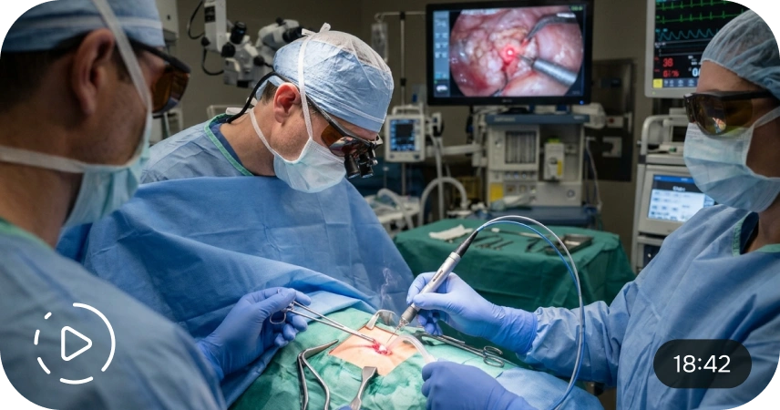
Литотрипсия
Официальный дистрибьютор Quanta System S.p.A. в России
Тулиевые и гольмиевые системы для урологии, нейрохирургии и общей хирургии. Поставка, обучение операционной команды и сервис из Москвы.
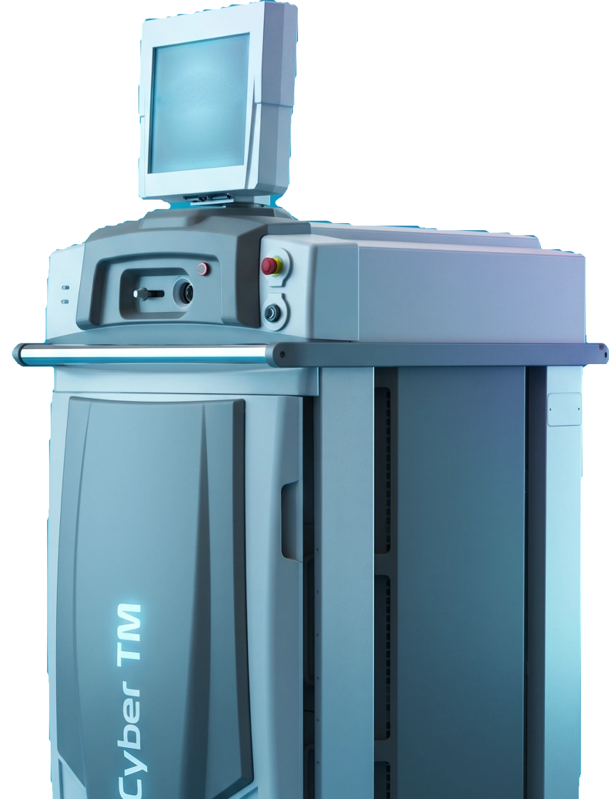
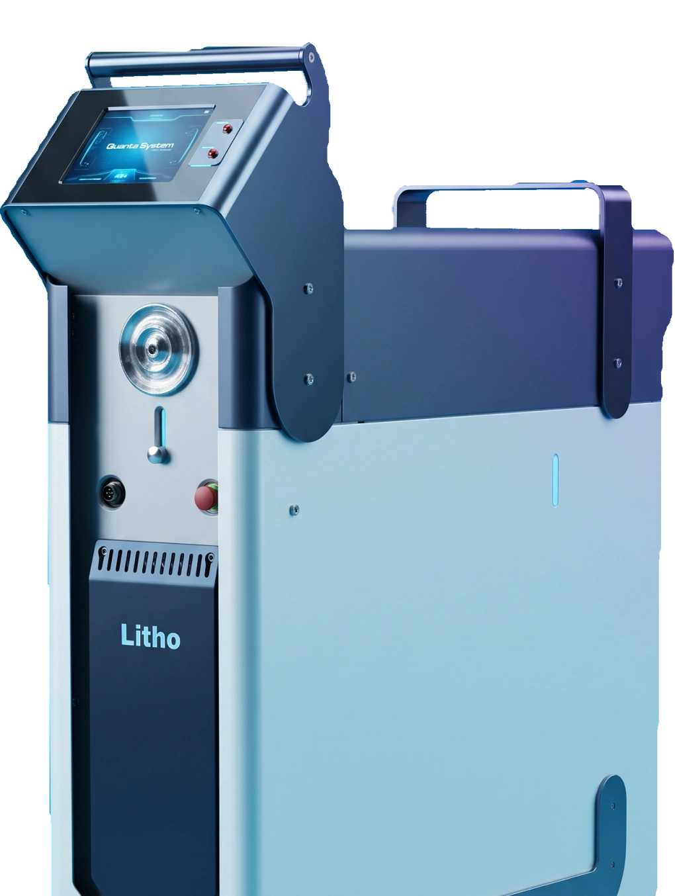
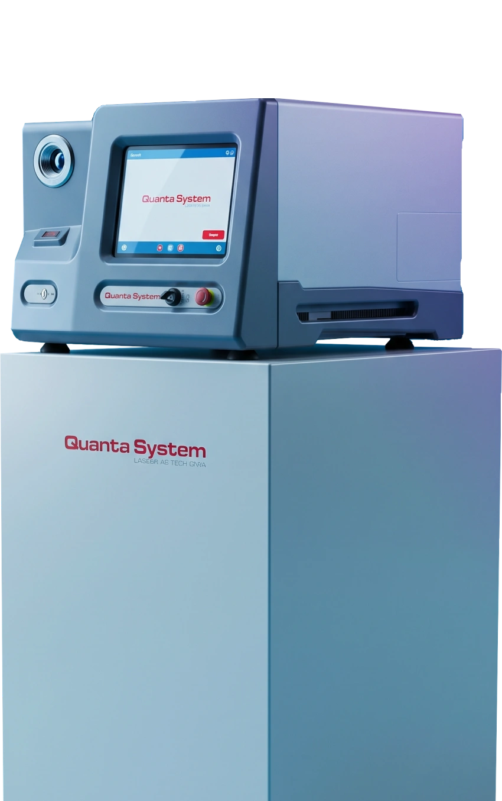
Четыре системы под разные задачи операционной. Выберите направление для работы
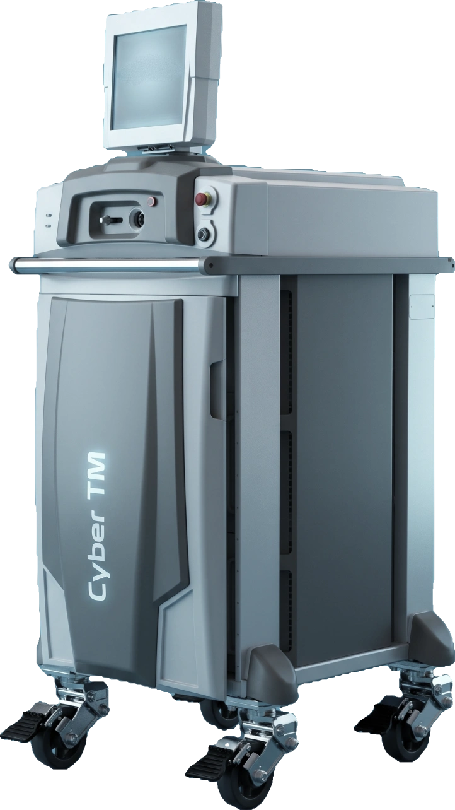
Тулиевые лазеры Cyber (150–200 Вт): прецизионная хирургия мягких тканей
Лазерные системы Cyber со специальным тулиевым излучением объединяют ювелирную точность воздействия и мгновенный гемостаз. Глубина термического повреждения окружающих тканей составляет всего 0,1–0,2 мм, что исключает побочные эффекты и ускоряет реабилитацию.
Лазерные системы Cyber со специальным тулиевым излучением объединяют ювелирную точность воздействия и мгновенный гемостаз. Глубина термического повреждения окружающих тканей составляет всего 0,1–0,2 мм, что исключает побочные эффекты и ускоряет реабилитацию.

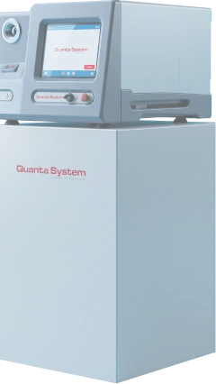
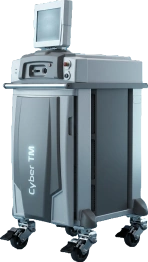
Сопровождаем от выбора модели до первой самостоятельной операции и дальше.
Аппликант приезжает с лазером в вашу операционную на тестовый день.
КП на бланке, проект ТЗ по 44-ФЗ и 223-ФЗ, регистрационные удостоверения.
Стажировка хирургов и сестёр в референтных центрах и в вашей клинике.
Склад запчастей в Москве, выезд инженера до 24 часов, подменный аппарат.
Мы не лечим сами, а поставляем оборудование. Но можем рассказать, как проходит лазерная операция, и подсказать клиники, где на нём работают.
Хирург работает через естественные пути тонким эндоскопом.
Луч прогревает ткань на десятые доли миллиметра и сразу запечатывает сосуды.
Сроки назначает лечащий врач после осмотра.
Методики, протоколы и опыт российских клиник по каждому направлению.
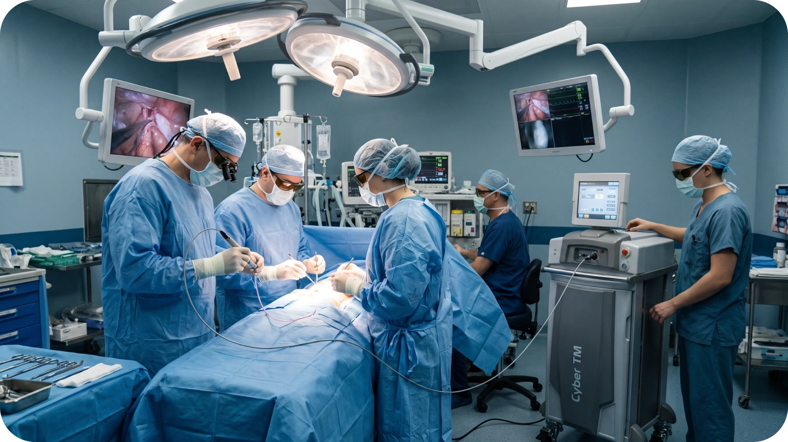
Итальянская разработка с 1985 года, сотни публикаций и обучение в референтных центрах России.
Смотреть операцииЗаписи с комментариями хирургов и параметрами лазера.

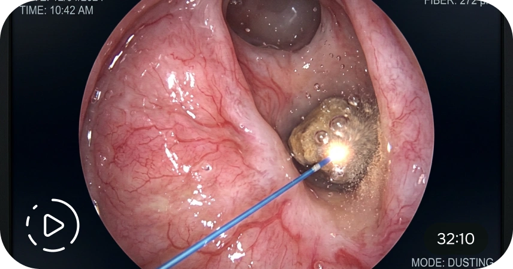
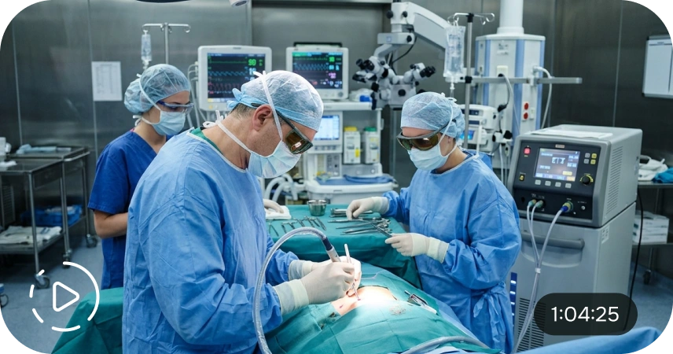
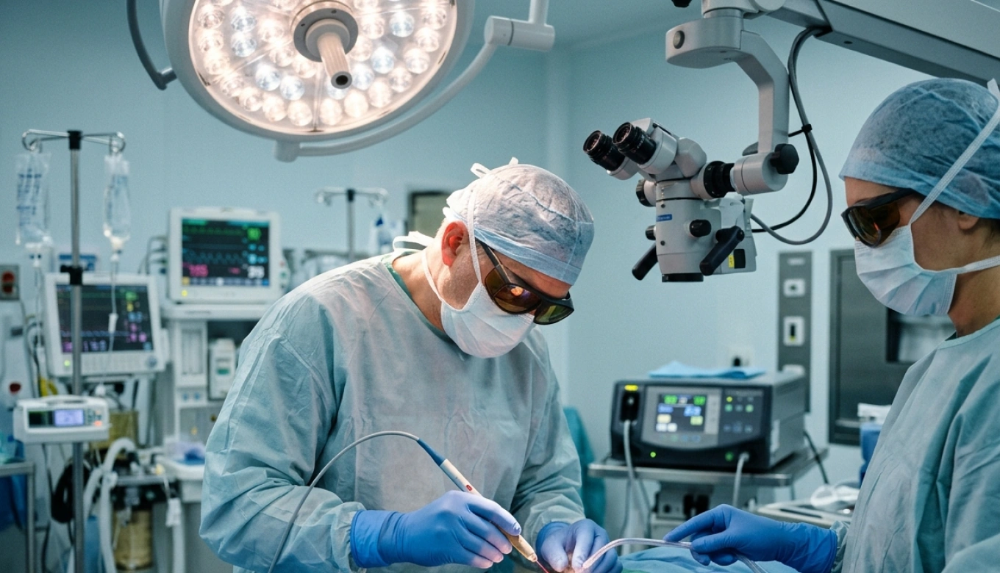